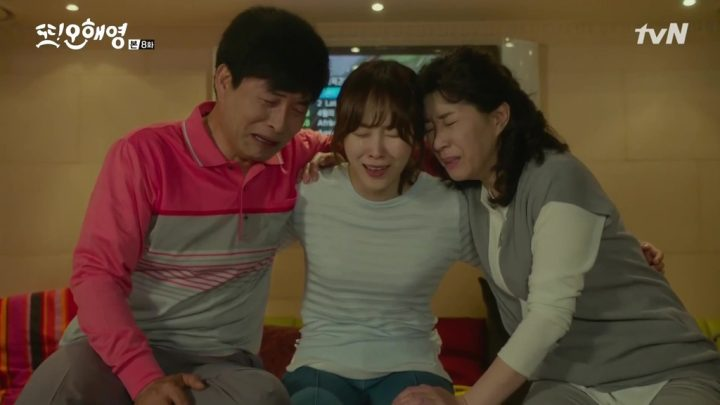
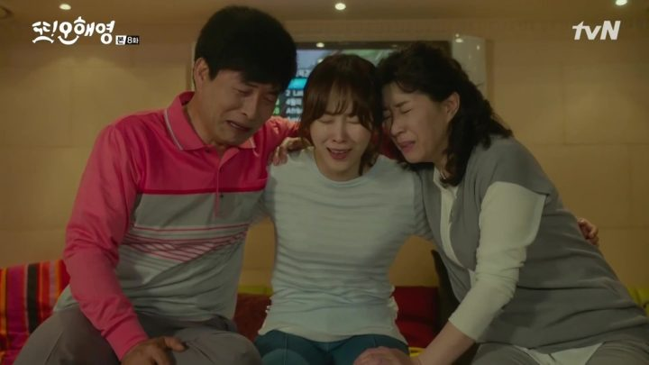
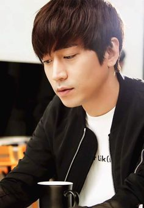

Devilish Joy (or Devilish Charm) is a romantic comedy about a doctor (Choi Jin Hyuk) suffering from “Cinderella Amnesia” where his memory only lasts one day and then resets who falls in love with a washed up actress (Song Ha Yoon). Devilish Joy is one of those dramas that has about every cliché in the book: white truck of doom, amnesia, evil mother figures, childhood trauma, and a host of others. But it throws them all together in a pretty entertaining story with an adorable romance, humor, and a decent plot.
Scene Photo


 

Movie Info
Gong Ma Sung grew up in a difficult life and experienced some hardships, yet still made joy from it. He is the successor to the Sunwoo company and excels in anything to do with the cranial nerve. From his difficulties, he is respected and looked up to as a brilliant man. One day, his kindness destroys his life. Whilst trying to help a woman in trouble, he gets into an accident and life completely changes. He loses the ability to remember, his memory only limited to one day. Now, before he goes to sleep and forgets everything, he notes all events from that one day, for the next. He wakes up with no recollection of the past, and reads back on his notes to memorize. His life changes further when he meets Joo Gi Bbeum, a once popular star, who was a celebrity and entertainer loved by all. She is not as revered as she once was, having going through a horrible experience that shaped who she is in the present, ruined her confidence and destroyed her future. When they meet, Gong Ma sung falls in love with her and a connection is formed but how do you develop a love when every day seems like the beginning.
- Genre:Romance , Comedy
- Director:Kim Ga-ram
- Writer:Choi Ji-yeon
- Original Release: September 5 – October 25, 2018
- No. of Episodes: 16 Episodes
Cast
 Choi Jin-hyuk as Gong Ma-seong (34 years old)The successor of Sunwoo Group is a doctor and chief of a cranial nerve center. After a car accident when he tries to help a woman who he happens to meet, he suffers from short-term amnesia and his memory does not last more than a day.
Song Ha-yoon as Ju Gi-ppeum (30 years old)A top actress who falls off from grace due to a false charge.
 Lee Ho-won as Sung Ki-joon (31 years old)
Lee Ho-won as Sung Ki-joon (31 years old)
Seo Yoon-hyuk as young Sung Ki-joon Ma-seong's younger cousin who is an entertainer whose dream is becoming a Hallyu star. He is the second in line heir to Sunwoo Group but is not interested in business..
Production
- Executive producer(s):
- Park Ho-sik
- Jinnie Jin-hee
- Yoon Gi-tae
- Producer(s):
- Lee Sang-hee
The series held the record highest audience rating for a tvN Monday-Tuesday show and became one of the highest rated Korean dramas in cable television history. The drama was extended by 2 episodes and 2 specials.